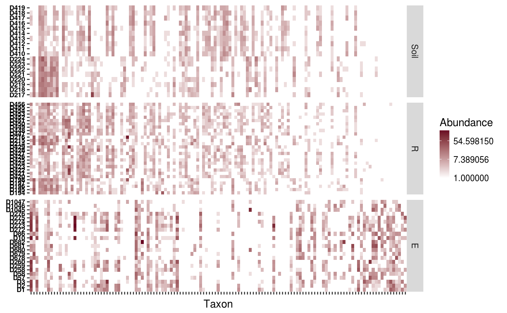
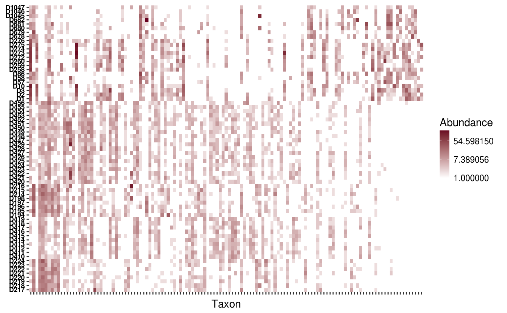
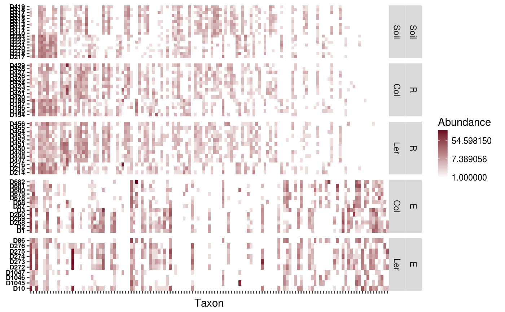
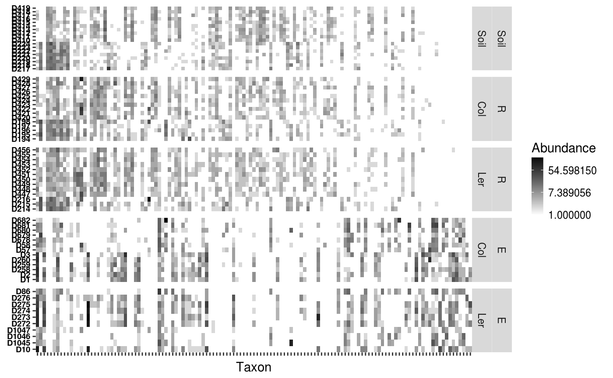

Basic heatmap function with ggplot2. I allows either to sort the samples according to a user defined variable, or to do a hierarchichal clustering, using uses ggdendro and grid to plot it
heatgg(...) # S3 method for default heatgg(Tab, Map, order.samples.by = NULL, facet = NULL, sample.id.var = "SAMPLEID", col.name = "Taxon", value.name = "Abundance", trans = "log", guide = "colourbar", gradientn.colours = c("white", "#67001F"), facet.scales = "free", cluster = FALSE, distfun = dist) # S3 method for Dataset heatgg(Dat, order.samples.by = NULL, facet = NULL, sample.id.var = "SAMPLEID", col.name = "Taxon", value.name = "Abundance", trans = "log", guide = "colourbar", gradientn.colours = c("white", "#67001F"), facet.scales = "free", cluster = FALSE, distfun = dist)
Arguments
| Tab | A numeric matrix with samples as columns and taxons as rows. |
|---|---|
| Map | A |
| order.samples.by | If passed, it must be a character variable with the name of a variable in Map (or in the Map attribute of the Dataset object). Samples will be ordered according to this variable. |
| facet | A faccetting formula expression. If passed, samples wll be arrranged
in panels accroding to |
| sample.id.var | This is the name the sample axis will have in the heatmap. |
| col.name | The name the x-axis will have in the heatmap. |
| value.name | The name that will be on the legend indicating the meaning of the color scale. |
| trans | Transformation to apply to the data during plotting. Ay continuous tranformation supported by ggplot2 can be used. Normally "log10" or "sqrt" |
| guide | Type of legend to use. This will be passed to the guide
option of |
| gradientn.colours | Colour range to use in the heatmap. |
| facet.scales | Argument to pass to the scales option of
|
| cluster | Logical. Indicates wheather to perform 2 dimensional hierarchichal clustering or not. |
| distfun | Distance function to use in the hierarchichal clustering. Only relevant if cluster equeals TRUE. |
| Dat | A |
Value
If cluster is FALSE it will return a ggplot2 object that can be furhter manipulated and plotted.
If cluster is TRUE it will return a list of class heatggclus that contains the heatmap tiles and each of the dendogram plots separately. There is print method for this class that will automatically generate the plot visualization
Details
Currently, it supports only 2d clustering, and it does not support the clustering or just samples or taxa.
The faceting and ordering options are only available for samples and when cluster is FALSE.
References
A lot of code and ideas was borrowed from these places:
https://github.com/chr1swallace/random-functions/blob/master/R/ggplot-heatmap.R http://stackoverflow.com/questions/6673162/reproducing-lattice-dendrogram-graph-with-ggplot2 http://stackoverflow.com/questions/12041042/how-to-plot-just-the-legends-in-ggplot2
Examples
data(Rhizo) data(Rhizo.map) data(Rhizo.tax) Dat <- create_dataset(Rhizo,Rhizo.map,Rhizo.tax) heatgg(Tab = Dat$Tab, Map = Dat$Map, order.samples.by = "fraction")#> Warning: Transformation introduced infinite values in discrete y-axisheatgg(Tab = Dat$Tab, Map = Dat$Map, facet = fraction ~ ., order.samples.by = "accession")#> Warning: Transformation introduced infinite values in discrete y-axisheatgg(Tab = Dat$Tab, Map = Dat$Map, facet = fraction + accession ~ .)#> Warning: Transformation introduced infinite values in discrete y-axisheatgg(Tab = Dat$Tab, Map = Dat$Map, facet = fraction + accession ~ ., gradientn.colours = c("white", "black"))#> Warning: Transformation introduced infinite values in discrete y-axisp1 <- heatgg(Tab = Dat$Tab, Map = Dat$Map, gradientn.colours = c("white","black"),cluster = TRUE) heatgg(Dat = Dat, order.samples.by = "fraction")#> Warning: Transformation introduced infinite values in discrete y-axisheatgg(Dat = Dat, facet = fraction ~ ., order.samples.by = "accession")#> Warning: Transformation introduced infinite values in discrete y-axisheatgg(Dat = Dat, facet = fraction + accession ~ .,)#> Warning: Transformation introduced infinite values in discrete y-axisheatgg(Dat = Dat, facet = fraction + accession ~ ., gradientn.colours = c("white", "black"))#> Warning: Transformation introduced infinite values in discrete y-axisp1 <- heatgg(Dat = Dat, gradientn.colours = c("white","black"), cluster = TRUE)